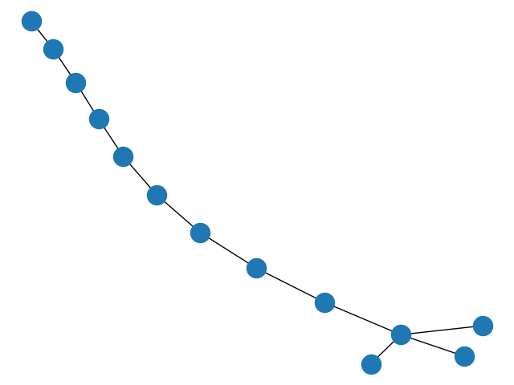

Note
Click here to download the full example code
Print Graph¶
Example subclass of the Graph class.
Out:
Add node: foo
Add node: b
Add node: a
Add node: r
Remove node: b
Remove node: a
Remove node: r
Nodes in G: [('foo', {'attr_dict': None})]
Add edge: 0-1
Edges in G: [(0, 1, {'attr_dict': None, 'weight': 10})]
Remove edge: 0-1
Add edge: 0-1
Add edge: 1-2
Add edge: 2-3
Edges in G: [(0, 1, {'attr_dict': None, 'weight': 10}), (1, 2, {'attr_dict': None, 'weight': 10}), (2, 3, {'attr_dict': None, 'weight': 10})]
Remove edge: 0-1
Remove edge: 1-2
Remove edge: 2-3
Edges in G: []
Add node: 0
Add edge: 0-1
Add edge: 1-2
Add edge: 2-3
Add edge: 3-4
Add edge: 4-5
Add edge: 5-6
Add edge: 6-7
Add edge: 7-8
Add edge: 8-9
Add node: 9
Add edge: 9-10
Add edge: 9-11
Add edge: 9-12
# Author: Aric Hagberg (hagberg@lanl.gov)
# Copyright (C) 2004-2019 by
# Aric Hagberg <hagberg@lanl.gov>
# Dan Schult <dschult@colgate.edu>
# Pieter Swart <swart@lanl.gov>
# All rights reserved.
# BSD license.
#
__docformat__ = "restructuredtext en"
from copy import deepcopy
import matplotlib.pyplot as plt
import networkx as nx
from networkx import Graph
class PrintGraph(Graph):
"""
Example subclass of the Graph class.
Prints activity log to file or standard output.
"""
def __init__(self, data=None, name='', file=None, **attr):
Graph.__init__(self, data=data, name=name, **attr)
if file is None:
import sys
self.fh = sys.stdout
else:
self.fh = open(file, 'w')
def add_node(self, n, attr_dict=None, **attr):
Graph.add_node(self, n, attr_dict=attr_dict, **attr)
self.fh.write("Add node: %s\n" % n)
def add_nodes_from(self, nodes, **attr):
for n in nodes:
self.add_node(n, **attr)
def remove_node(self, n):
Graph.remove_node(self, n)
self.fh.write("Remove node: %s\n" % n)
def remove_nodes_from(self, nodes):
for n in nodes:
self.remove_node(n)
def add_edge(self, u, v, attr_dict=None, **attr):
Graph.add_edge(self, u, v, attr_dict=attr_dict, **attr)
self.fh.write("Add edge: %s-%s\n" % (u, v))
def add_edges_from(self, ebunch, attr_dict=None, **attr):
for e in ebunch:
u, v = e[0:2]
self.add_edge(u, v, attr_dict=attr_dict, **attr)
def remove_edge(self, u, v):
Graph.remove_edge(self, u, v)
self.fh.write("Remove edge: %s-%s\n" % (u, v))
def remove_edges_from(self, ebunch):
for e in ebunch:
u, v = e[0:2]
self.remove_edge(u, v)
def clear(self):
Graph.clear(self)
self.fh.write("Clear graph\n")
if __name__ == '__main__':
G = PrintGraph()
G.add_node('foo')
G.add_nodes_from('bar', weight=8)
G.remove_node('b')
G.remove_nodes_from('ar')
print("Nodes in G: ", G.nodes(data=True))
G.add_edge(0, 1, weight=10)
print("Edges in G: ", G.edges(data=True))
G.remove_edge(0, 1)
G.add_edges_from(zip(range(0, 3), range(1, 4)), weight=10)
print("Edges in G: ", G.edges(data=True))
G.remove_edges_from(zip(range(0, 3), range(1, 4)))
print("Edges in G: ", G.edges(data=True))
G = PrintGraph()
nx.add_path(G, range(10))
nx.add_star(G, range(9, 13))
nx.draw(G)
plt.show()
Total running time of the script: ( 0 minutes 0.159 seconds)